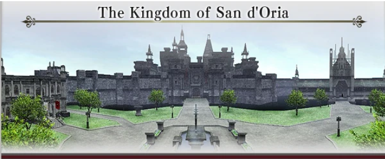
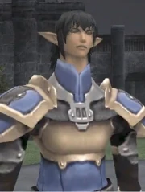

The Kingdom of San d'Oria
The elvaan, a proud race of warriors, forged this kingdom in northern Quon from the fires of civil war.
House d'Oraguille has ruled from the fortress city of san d"oria for over five hundred years.
-
Two elite chivalric orders keep watch over the kingdom.
The Royal Knights patrol it's borders, while the Temple Knights maintain peace within the capital.
Thanks to their vigilange, no army has ever breached the city wall.

Rochegogne : Say, are you an adventurer ?
My name is Rochefogne, and i am an adventurer, too. I have just arrived at san d'Oria...
and already i am struck at how little has changed !
++cathedral
Rochefogne : can you see the great cathedral yonder? Faithful San d'Oriangs gather there still in worship to the Goddess of the Dawn
Rochefogne : And behold its' balcony ! Could the papsque still rise there to grant benedition
++gard walk in ++ chateau d"oraguille
Rochefogne : Hmm ? and they must be Royal Knights...
Rochefogne : Swiftly do they return to Chateau d'Oraguille,
++ rochefogne et moi
Rochefogne : You, Too, must learn the differance between the Temple Knights and the Royal Knights, if you are to bear San D'Orian citizenship !
Rochefogne : The Temple Knights shield the capital, while the Royal Knights strike at our foes!
++Rochefogne
Rochefogne : i heard mention in my travels that Prince Trion had assumed control of the Royal Knights.
Rochefogne : Yes, Trion... Of him i have heard naught for ages. I do hope the princes are well
Rochefogne : And princess Claidie! Fair is said to be the younger sister of Trion and Pieuje. Prehaps someday i may meet her!
But, I ramble. Maybe pardons!
So long have i been away that my head races. Well, adventure proudly for San d'Oria, and your blade shall never falter
Oh, Before i foget... i give you this for your journeys. Show it to Matildie, who stands before the drawbridge to Chateau d'Oraguille
She might be a tab more critical than most, so you might want to be careful.
I will pin her on your map
Now, I must go and seeks entrance to the castle. May we meet again, Storyman!